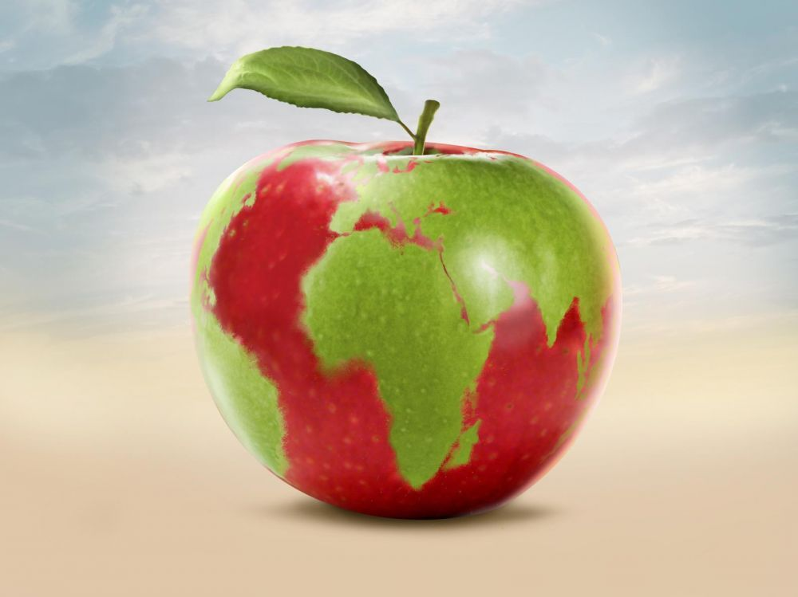

Bienvenus à vous visiteurs !
Que diriez-vous de parler anthropocène ? Ne fuyez pas, s’il peut heurter l’oreille, ce mot d’apparence barbare cache en réalité un concept des plus actuels : nous évoquons ici l'impact des activités humaines sur l'écosystème terrestre. Si vous lisez les titres, vous voyez certainement où je veux en venir … Le bilan écologique de notre alimentation !
Largement popularisé, j’attendais de capter votre attention avant d’utiliser le terme « écologique », car il est vrai que de nos jours, il sature les médias et débarque souvent accompagné d'affirmations péremptoires et d'injonctions à bien agir, sans qu'aucune explication ne soit fournie.
Pour ce qui est de la partie « alimentation », si elle est souvent éclipsée par d’autres considérations telles que notre consommation d'eau et d'électricité, la pollution due aux moyens de transports, aux usines (etc), la chaîne d'approvisionnement alimentaire exerce pourtant de nombreuses pressions sur l'environnement, et pas des moindres.
Installez vous donc confortablement et lancez le quiz : de la fourche à l’assiette, nous allons voir quel est le coût environnemental de notre alimentation et comment agir pour manger responsable. Visualisations à l'appui, expliquons le pourquoi du comment de toutes les recommandations qui circulent à ce sujet !
Notre Alimentation et son Impact Écologique
